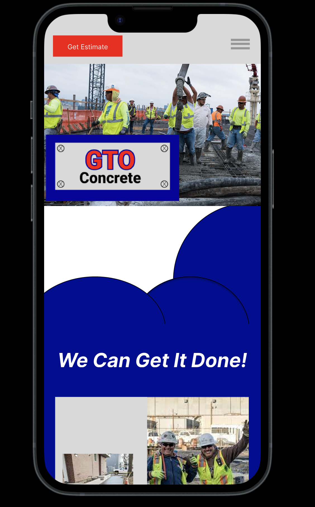

https://www.figma.com/proto/pSvGNp2R575Vu252nR5yyo/GTO-figma-prototype?node-id=1-4&scaling=scale-down&page-id=0%3A1
- 1. Who is the target audience?
- Contracting business for big jobs but also anyone who needs a small home job done.
- 2. How can I tailor the web site to reach that audience?
- Make it look professional so that the quality of the work and experience is not questioned. Make sure the user can see that we are able to do the job correctly.
- 3. What are the goals for the site?
- Show off previous work
Let user get an estimate on the job
Let user set up a in-person meeting for the job
- 4. How will I gather the information?
- My dad owns the company so I will get all the information from him.
- 5. What are my sources for multimedia content?
- My dad has multiple pictures of finished projects in the past
- 6. What is my budget?
- $0
- 7. How long do I have to complete the project?
- 4 weeks
- 8. Who is on my project team?
- My dad
- 9. How often should the site be updated?
- Everytime a project is completed so that the pictures can be added if wanted.
- 10. Who is responsible for updating the site?
- I will be responsible for updating once I am told a project is complete.